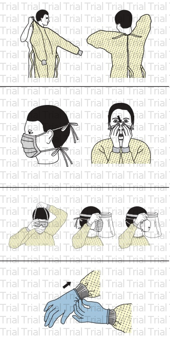

Since a vaccine for SARS-CoV-2 is not expected to be available before at least 2021, COVID-19 pandemic management relies on reducing the pandemic peak, also known as "flattening the pandemic curve", through several measures aimed at reducing the incidence of the pandemic. new injuries. Slowing the spread of infection reduces the potential for health services to be flooded, which allows those affected to receive better health care, and provides more time to develop a specific vaccine or treatment.